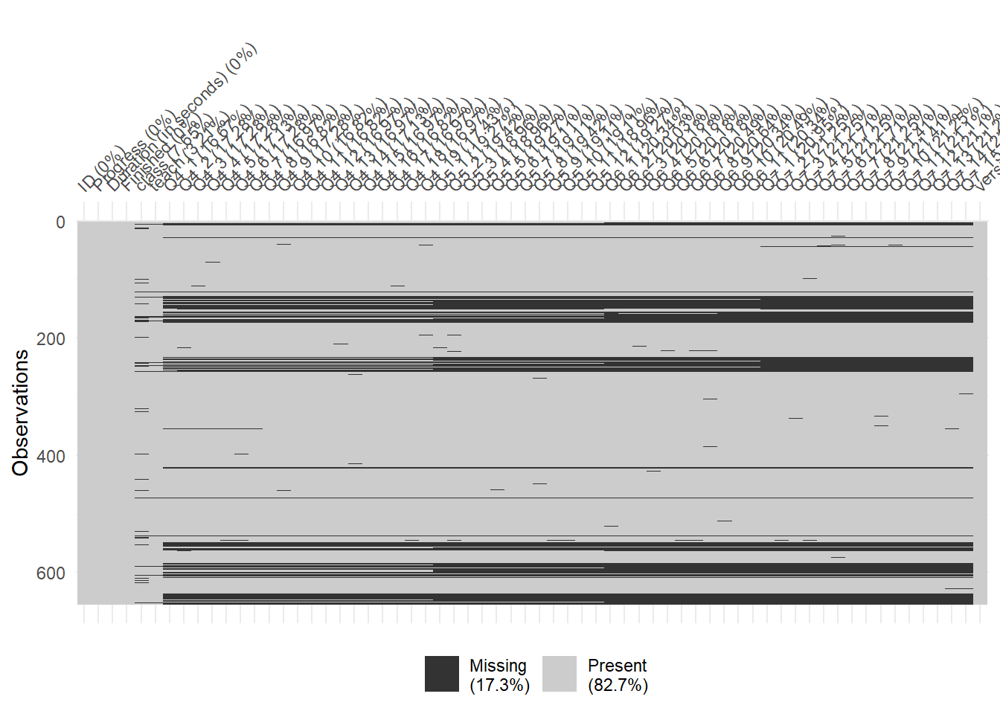
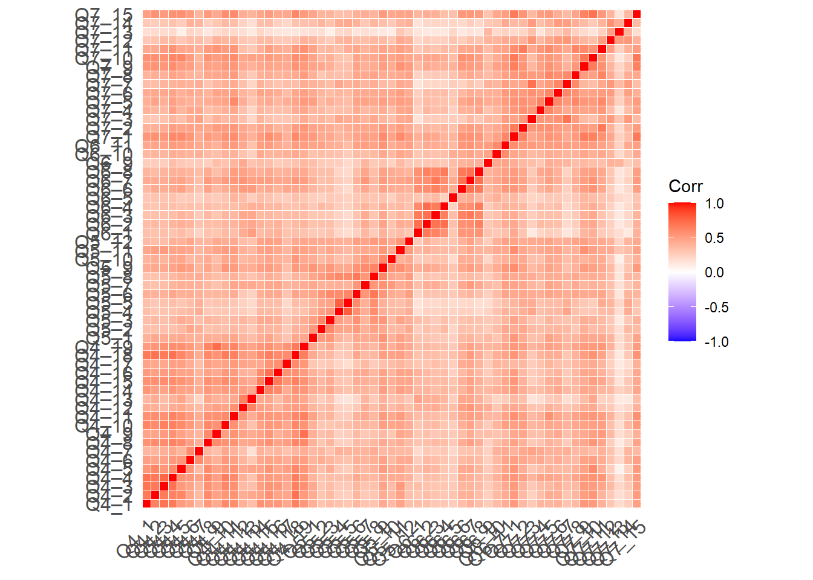

Pilot Study Data Management
R. Noah Padgett
2020-11-16
Last updated: 2020-11-19
Checks: 6 1
Knit directory: pools-projects/
This reproducible R Markdown analysis was created with workflowr (version 1.6.2). The Checks tab describes the reproducibility checks that were applied when the results were created. The Past versions tab lists the development history.
The R Markdown is untracked by Git. To know which version of the R Markdown file created these results, you’ll want to first commit it to the Git repo. If you’re still working on the analysis, you can ignore this warning. When you’re finished, you can run wflow_publish to commit the R Markdown file and build the HTML.
Great job! The global environment was empty. Objects defined in the global environment can affect the analysis in your R Markdown file in unknown ways. For reproduciblity it’s best to always run the code in an empty environment.
The command set.seed(20201007) was run prior to running the code in the R Markdown file. Setting a seed ensures that any results that rely on randomness, e.g. subsampling or permutations, are reproducible.
Great job! Recording the operating system, R version, and package versions is critical for reproducibility.
Nice! There were no cached chunks for this analysis, so you can be confident that you successfully produced the results during this run.
Great job! Using relative paths to the files within your workflowr project makes it easier to run your code on other machines.
Great! You are using Git for version control. Tracking code development and connecting the code version to the results is critical for reproducibility.
The results in this page were generated with repository version 76332d3. See the Past versions tab to see a history of the changes made to the R Markdown and HTML files.
Note that you need to be careful to ensure that all relevant files for the analysis have been committed to Git prior to generating the results (you can use wflow_publish or wflow_git_commit). workflowr only checks the R Markdown file, but you know if there are other scripts or data files that it depends on. Below is the status of the Git repository when the results were generated:
Ignored files:
Ignored: .Rhistory
Ignored: .Rproj.user/
Untracked files:
Untracked: IRB/
Untracked: analysis/pilot-study-CFA.Rmd
Untracked: analysis/pilot-study-EFA.Rmd
Untracked: analysis/pilot-study-data-management.Rmd
Untracked: analysis/pilot-study-power-calculation.Rmd
Untracked: analysis/pools-definitions.Rmd
Untracked: analysis/power-calculation.Rmd
Untracked: code/load_packages.R
Untracked: code/r_functions.R
Untracked: code/test_data.Rmd
Untracked: code/test_data.nb.html
Untracked: data/data-2020-11-04/
Untracked: data/data-2020-11-16/
Untracked: data/pilot-data-item-review.xlsx
Untracked: data/sim_test.RData
Untracked: data/~$pilot-data-item-review.xlsx
Untracked: item-review-1/
Untracked: item-review-2/
Untracked: output/pilot-data-item-review.xlsx
Untracked: papers/
Unstaged changes:
Modified: analysis/_site.yml
Modified: analysis/index.Rmd
Modified: pools-projects.Rproj
Note that any generated files, e.g. HTML, png, CSS, etc., are not included in this status report because it is ok for generated content to have uncommitted changes.
There are no past versions. Publish this analysis with wflow_publish() to start tracking its development.
source("code/load_packages.R")
set.seed(20201116)
mydata <- readxl::read_xlsx("data/data-2020-11-16/POOLS_data_2020-11-16.xlsx")
naniar::vis_miss(mydata)
Next, look at the summary level statistics of the raw data.
mydata %>% summarise(N = n())# A tibble: 1 x 1
N
<int>
1 654apply(mydata[-1,],2, summary)$ID
Min. 1st Qu. Median Mean 3rd Qu. Max.
2 165 328 328 491 654
$Progress
Min. 1st Qu. Median Mean 3rd Qu. Max.
14.00 100.00 100.00 88.76 100.00 100.00
$`Duration (in seconds)`
Min. 1st Qu. Median Mean 3rd Qu. Max.
2 171 265 1143 382 167259
$Finished
Min. 1st Qu. Median Mean 3rd Qu. Max.
0.0000 1.0000 1.0000 0.7963 1.0000 1.0000
$class
Min. 1st Qu. Median Mean 3rd Qu. Max. NA's
1.000 1.000 1.000 1.061 1.000 2.000 50
$teach
Min. 1st Qu. Median Mean 3rd Qu. Max. NA's
1.000 1.000 1.000 1.405 2.000 2.000 21
$Q4_1
Min. 1st Qu. Median Mean 3rd Qu. Max. NA's
1.000 2.000 2.000 2.419 3.000 5.000 109
$Q4_2
Min. 1st Qu. Median Mean 3rd Qu. Max. NA's
1.000 2.000 2.000 2.296 3.000 5.000 113
$Q4_3
Min. 1st Qu. Median Mean 3rd Qu. Max. NA's
1.000 2.000 3.000 2.515 3.000 5.000 113
$Q4_4
Min. 1st Qu. Median Mean 3rd Qu. Max. NA's
1.00 2.00 3.00 2.53 3.00 5.00 113
$Q4_5
Min. 1st Qu. Median Mean 3rd Qu. Max. NA's
1.000 2.000 2.000 2.335 3.000 5.000 112
$Q4_6
Min. 1st Qu. Median Mean 3rd Qu. Max. NA's
1.000 2.000 3.000 2.837 4.000 5.000 113
$Q4_7
Min. 1st Qu. Median Mean 3rd Qu. Max. NA's
1.000 3.000 4.000 3.487 4.000 5.000 111
$Q4_8
Min. 1st Qu. Median Mean 3rd Qu. Max. NA's
1.000 2.000 2.000 2.278 3.000 5.000 110
$Q4_9
Min. 1st Qu. Median Mean 3rd Qu. Max. NA's
1.000 2.000 2.000 2.489 3.000 5.000 113
$Q4_10
Min. 1st Qu. Median Mean 3rd Qu. Max. NA's
1.000 2.000 3.000 2.505 3.000 5.000 110
$Q4_11
Min. 1st Qu. Median Mean 3rd Qu. Max. NA's
1.000 2.000 2.000 2.481 3.000 5.000 110
$Q4_12
Min. 1st Qu. Median Mean 3rd Qu. Max. NA's
1.000 1.000 2.000 2.183 3.000 5.000 111
$Q4_13
Min. 1st Qu. Median Mean 3rd Qu. Max. NA's
1.000 1.000 1.000 1.642 2.000 5.000 111
$Q4_14
Min. 1st Qu. Median Mean 3rd Qu. Max. NA's
1.000 2.000 3.000 2.619 3.000 5.000 112
$Q4_15
Min. 1st Qu. Median Mean 3rd Qu. Max. NA's
1.000 2.000 2.000 2.376 3.000 5.000 111
$Q4_16
Min. 1st Qu. Median Mean 3rd Qu. Max. NA's
1.00 2.00 2.00 2.39 3.00 5.00 110
$Q4_17
Min. 1st Qu. Median Mean 3rd Qu. Max. NA's
1.000 1.000 2.000 2.173 3.000 5.000 111
$Q4_18
Min. 1st Qu. Median Mean 3rd Qu. Max. NA's
1.000 2.000 2.000 2.375 3.000 5.000 111
$Q4_19
Min. 1st Qu. Median Mean 3rd Qu. Max. NA's
1.000 2.000 3.000 2.514 3.000 5.000 114
$Q5_1
Min. 1st Qu. Median Mean 3rd Qu. Max. NA's
1.000 2.000 3.000 2.586 3.000 5.000 126
$Q5_2
Min. 1st Qu. Median Mean 3rd Qu. Max. NA's
1.000 2.000 3.000 2.926 4.000 5.000 127
$Q5_3
Min. 1st Qu. Median Mean 3rd Qu. Max. NA's
1.000 2.000 3.000 2.643 3.000 5.000 124
$Q5_4
Min. 1st Qu. Median Mean 3rd Qu. Max. NA's
1.000 3.000 4.000 3.374 4.000 5.000 124
$Q5_5
Min. 1st Qu. Median Mean 3rd Qu. Max. NA's
1.000 3.000 4.000 3.385 4.000 5.000 126
$Q5_6
Min. 1st Qu. Median Mean 3rd Qu. Max. NA's
1.000 2.000 3.000 2.867 4.000 5.000 125
$Q5_7
Min. 1st Qu. Median Mean 3rd Qu. Max. NA's
1.000 2.000 3.000 2.657 3.000 5.000 125
$Q5_8
Min. 1st Qu. Median Mean 3rd Qu. Max. NA's
1.000 2.000 3.000 2.873 4.000 5.000 127
$Q5_9
Min. 1st Qu. Median Mean 3rd Qu. Max. NA's
1.000 2.000 3.000 2.597 3.000 5.000 125
$Q5_10
Min. 1st Qu. Median Mean 3rd Qu. Max. NA's
1.00 2.00 3.00 2.54 3.00 5.00 125
$Q5_11
Min. 1st Qu. Median Mean 3rd Qu. Max. NA's
1.000 2.000 3.000 2.681 3.000 5.000 124
$Q5_12
Min. 1st Qu. Median Mean 3rd Qu. Max. NA's
1.000 2.000 3.000 2.812 4.000 5.000 126
$Q6_1
Min. 1st Qu. Median Mean 3rd Qu. Max. NA's
1.000 1.000 1.000 1.717 2.000 5.000 133
$Q6_2
Min. 1st Qu. Median Mean 3rd Qu. Max. NA's
1.000 1.000 2.000 2.075 3.000 5.000 131
$Q6_3
Min. 1st Qu. Median Mean 3rd Qu. Max. NA's
1.000 1.000 2.000 1.952 2.000 5.000 132
$Q6_4
Min. 1st Qu. Median Mean 3rd Qu. Max. NA's
1.000 1.000 2.000 2.113 3.000 5.000 132
$Q6_5
Min. 1st Qu. Median Mean 3rd Qu. Max. NA's
1.000 2.000 2.000 2.453 3.000 5.000 132
$Q6_6
Min. 1st Qu. Median Mean 3rd Qu. Max. NA's
1.000 1.000 2.000 1.785 2.000 5.000 132
$Q6_7
Min. 1st Qu. Median Mean 3rd Qu. Max. NA's
1.000 1.000 2.000 2.168 3.000 5.000 134
$Q6_8
Min. 1st Qu. Median Mean 3rd Qu. Max. NA's
1.000 1.000 2.000 2.162 3.000 5.000 135
$Q6_9
Min. 1st Qu. Median Mean 3rd Qu. Max. NA's
1.000 2.000 3.000 2.781 4.000 5.000 133
$Q6_10
Min. 1st Qu. Median Mean 3rd Qu. Max. NA's
1.000 2.000 3.000 2.846 4.000 5.000 134
$Q6_11
Min. 1st Qu. Median Mean 3rd Qu. Max. NA's
1.000 2.000 3.000 2.719 3.000 5.000 133
$Q7_1
Min. 1st Qu. Median Mean 3rd Qu. Max. NA's
1.000 2.000 2.000 2.413 3.000 5.000 137
$Q7_2
Min. 1st Qu. Median Mean 3rd Qu. Max. NA's
1.000 2.000 3.000 2.591 3.000 5.000 139
$Q7_3
Min. 1st Qu. Median Mean 3rd Qu. Max. NA's
1.000 3.000 4.000 3.432 4.000 5.000 139
$Q7_4
Min. 1st Qu. Median Mean 3rd Qu. Max. NA's
1.000 2.000 3.000 2.793 4.000 5.000 142
$Q7_5
Min. 1st Qu. Median Mean 3rd Qu. Max. NA's
1.000 2.000 3.000 2.792 3.000 5.000 139
$Q7_6
Min. 1st Qu. Median Mean 3rd Qu. Max. NA's
1.000 2.000 3.000 2.873 4.000 5.000 142
$Q7_7
Min. 1st Qu. Median Mean 3rd Qu. Max. NA's
1.000 3.000 4.000 3.519 4.000 5.000 139
$Q7_8
Min. 1st Qu. Median Mean 3rd Qu. Max. NA's
1.00 2.00 3.00 2.77 3.00 5.00 140
$Q7_9
Min. 1st Qu. Median Mean 3rd Qu. Max. NA's
1.000 2.000 3.000 2.495 3.000 5.000 140
$Q7_10
Min. 1st Qu. Median Mean 3rd Qu. Max. NA's
1.000 1.000 2.000 2.222 3.000 5.000 139
$Q7_11
Min. 1st Qu. Median Mean 3rd Qu. Max. NA's
1.000 2.000 3.000 2.674 3.000 5.000 138
$Q7_12
Min. 1st Qu. Median Mean 3rd Qu. Max. NA's
1.000 3.000 4.000 3.346 4.000 5.000 138
$Q7_13
Min. 1st Qu. Median Mean 3rd Qu. Max. NA's
1.000 3.000 4.000 3.533 4.000 5.000 139
$Q7_14
Min. 1st Qu. Median Mean 3rd Qu. Max. NA's
1.000 3.000 4.000 3.511 4.000 5.000 142
$Q7_15
Min. 1st Qu. Median Mean 3rd Qu. Max. NA's
1.000 2.000 3.000 2.447 3.000 5.000 143
$version
Min. 1st Qu. Median Mean 3rd Qu. Max.
1.000 1.000 1.100 1.222 1.500 1.500 Basic Item Analysis
psychometric::item.exam(mydata[,7:63],discrim = T) Sample.SD Item.total Item.Tot.woi Difficulty Discrimination
Q4_1 0.8872082 0.6516070 0.6373040 2.427039 1.2258065
Q4_2 0.8355396 0.6740773 0.6613121 2.315451 1.2129032
Q4_3 0.8653310 0.6658966 0.6524035 2.525751 1.1870968
Q4_4 0.8672355 0.7207306 0.7090310 2.540773 1.3612903
Q4_5 0.9221809 0.6784608 0.6644890 2.332618 1.3935484
Q4_6 1.0529325 0.6798330 0.6638760 2.873391 1.5741935
Q4_7 1.0033678 0.6164219 0.5989636 3.527897 1.2451613
Q4_8 0.9383901 0.6793846 0.6651933 2.287554 1.4451613
Q4_9 1.0539028 0.6560544 0.6391568 2.493562 1.5483871
Q4_10 0.8064561 0.7034755 0.6920670 2.512876 1.1806452
Q4_11 0.9907808 0.7185443 0.7050420 2.491416 1.5612903
Q4_12 1.1303523 0.6257440 0.6063727 2.184549 1.6000000
Q4_13 0.8341216 0.5583652 0.5423567 1.622318 1.0387097
Q4_14 0.9818605 0.6801578 0.6653195 2.648069 1.4322581
Q4_15 0.9384909 0.7174028 0.7045903 2.396996 1.4645161
Q4_16 0.9675906 0.6388783 0.6228078 2.394850 1.3935484
Q4_17 1.0063461 0.5898531 0.5714573 2.173820 1.3806452
Q4_18 0.8350423 0.7364345 0.7257101 2.384120 1.3483871
Q4_19 1.0287056 0.7232103 0.7093677 2.530043 1.6903226
Q5_1 0.9996746 0.6190576 0.6017546 2.611588 1.3483871
Q5_2 1.1228972 0.5968539 0.5765253 2.939914 1.4387097
Q5_3 1.1249174 0.6047626 0.5846894 2.660944 1.4516129
Q5_4 1.1709405 0.5502629 0.5273307 3.420601 1.3290323
Q5_5 1.1190871 0.5457499 0.5237081 3.405579 1.2258065
Q5_6 0.9887922 0.6618613 0.6462444 2.892704 1.3677419
Q5_7 1.0210327 0.6355627 0.6184619 2.671674 1.4387097
Q5_8 1.1455520 0.6251856 0.6055242 2.909871 1.4967742
Q5_9 1.0120165 0.7061623 0.6918662 2.615880 1.4967742
Q5_10 0.8725433 0.5976739 0.5819974 2.572961 1.0516129
Q5_11 0.9966509 0.6885824 0.6738324 2.710300 1.4258065
Q5_12 1.0617990 0.6456678 0.6282440 2.841202 1.4516129
Q6_1 0.8942956 0.5483070 0.5308487 1.710300 1.0516129
Q6_2 0.9885052 0.5961613 0.5783020 2.075107 1.1935484
Q6_3 1.0104443 0.5830481 0.5643549 1.948498 1.2709677
Q6_4 1.0288290 0.5595960 0.5398014 2.111588 1.1548387
Q6_5 1.1678406 0.4767321 0.4514771 2.474249 1.1806452
Q6_6 0.8692367 0.6638339 0.6502127 1.774678 1.2709677
Q6_7 0.9499351 0.7040562 0.6905832 2.163090 1.4709677
Q6_8 0.9514326 0.6509685 0.6355817 2.160944 1.2645161
Q6_9 1.3537951 0.5395366 0.5124850 2.778970 1.6193548
Q6_10 1.0887601 0.6214869 0.6026895 2.862661 1.3677419
Q6_11 1.0412153 0.7271575 0.7133071 2.746781 1.6322581
Q7_1 0.9426981 0.7743595 0.7637171 2.416309 1.6709677
Q7_2 0.9320566 0.7212084 0.7086279 2.598712 1.4064516
Q7_3 1.0678492 0.6002486 0.5810614 3.476395 1.3290323
Q7_4 1.0532458 0.6317092 0.6139125 2.802575 1.3612903
Q7_5 1.0266647 0.6927797 0.6777375 2.815451 1.5290323
Q7_6 1.0123607 0.6772793 0.6618576 2.914163 1.5225806
Q7_7 1.0950153 0.6002922 0.5806053 3.579399 1.4516129
Q7_8 0.9929211 0.6571979 0.6413455 2.800429 1.4387097
Q7_9 1.0680911 0.7276687 0.7134714 2.506438 1.7677419
Q7_10 1.0240903 0.7416136 0.7286033 2.218884 1.7548387
Q7_11 0.9402791 0.7003716 0.6869045 2.693133 1.4322581
Q7_12 1.1216636 0.5604369 0.5388392 3.373391 1.3419355
Q7_13 1.1271981 0.3058337 0.2774909 3.560086 0.6516129
Q7_14 1.0932101 0.5223430 0.5000812 3.540773 1.0838710
Q7_15 0.9911627 0.7239081 0.7106135 2.439914 1.6064516
Item.Criterion Item.Reliab Item.Rel.woi Item.Validity
Q4_1 NA 0.5774905 0.5648143 NA
Q4_2 NA 0.5626136 0.5519592 NA
Q4_3 NA 0.5756024 0.5639389 NA
Q4_4 NA 0.6243722 0.6142368 NA
Q4_5 NA 0.6249919 0.6121212 NA
Q4_6 NA 0.7150498 0.6982662 NA
Q4_7 NA 0.6178339 0.6003356 NA
Q4_8 NA 0.6368433 0.6235407 NA
Q4_9 NA 0.6906753 0.6728860 NA
Q4_10 NA 0.5667131 0.5575225 NA
Q4_11 NA 0.7111556 0.6977922 NA
Q4_12 NA 0.7065518 0.6846790 NA
Q4_13 NA 0.4652445 0.4519058 NA
Q4_14 NA 0.6671031 0.6525496 NA
Q4_15 NA 0.6725532 0.6605417 NA
Q4_16 NA 0.6175090 0.6019760 NA
Q4_17 NA 0.5929591 0.5744665 NA
Q4_18 NA 0.6142938 0.6053481 NA
Q4_19 NA 0.7431718 0.7289471 NA
Q5_1 NA 0.6181918 0.6009130 NA
Q5_2 NA 0.6694861 0.6466836 NA
Q5_3 NA 0.6795776 0.6570211 NA
Q5_4 NA 0.6436334 0.6168100 NA
Q5_5 NA 0.6100861 0.5854458 NA
Q5_6 NA 0.6537407 0.6383155 NA
Q5_7 NA 0.6482336 0.6307919 NA
Q5_8 NA 0.7154138 0.6929148 NA
Q5_9 NA 0.7138807 0.6994283 NA
Q5_10 NA 0.5209365 0.5072728 NA
Q5_11 NA 0.6855395 0.6708547 NA
Q5_12 NA 0.6848334 0.6663527 NA
Q6_1 NA 0.4898221 0.4742260 NA
Q6_2 NA 0.5886759 0.5710408 NA
Q6_3 NA 0.5885052 0.5696370 NA
Q6_4 NA 0.5751105 0.5547672 NA
Q6_5 NA 0.5561494 0.5266872 NA
Q6_6 NA 0.5764093 0.5645820 NA
Q6_7 NA 0.6680897 0.6553049 NA
Q6_8 NA 0.6186877 0.6040640 NA
Q6_9 NA 0.7296379 0.6930548 NA
Q6_10 NA 0.6759238 0.6554798 NA
Q6_11 NA 0.7563147 0.7419090 NA
Q7_1 NA 0.7292035 0.7191817 NA
Q7_2 NA 0.6714854 0.6597722 NA
Q7_3 NA 0.6402868 0.6198198 NA
Q7_4 NA 0.6646308 0.6459066 NA
Q7_5 NA 0.7104889 0.6950621 NA
Q7_6 NA 0.6849149 0.6693193 NA
Q7_7 NA 0.6566234 0.6350891 NA
Q7_8 NA 0.6518451 0.6361218 NA
Q7_9 NA 0.7763821 0.7612344 NA
Q7_10 NA 0.7586639 0.7453545 NA
Q7_11 NA 0.6578378 0.6451885 NA
Q7_12 NA 0.6279468 0.6037475 NA
Q7_13 NA 0.3443651 0.3124514 NA
Q7_14 NA 0.5704176 0.5461069 NA
Q7_15 NA 0.7167404 0.7035775 NAData Cleaning
Here, I proceed with data munging to impute missing values and then construct two split halves.
Missing Data
naniar::vis_miss(mydata)
anyNA(mydata)[1] TRUE# remove cases with less than 43% complete (i.e., just openned then closed survey)
mydata.imp <- mydata %>%
filter(Progress >= 43)
# impute class/teach based on progress
mydata.imp <- mydata.imp %>%
group_by(Progress) %>%
mutate(class = ifelse(is.na(class) == T, round(median(class, na.rm=T),0), class),
teach = ifelse(is.na(teach) == T, round(median(teach, na.rm=T),0), teach))
# impute missing survey responses by median of group of class/teach
mydata.imp <- mydata.imp %>%
group_by(class, teach) %>%
mutate(across(Q4_1:Q7_15, ~ifelse(is.na(.x), round(median(.x, na.rm=T),0), .x)))
anyNA(mydata.imp)[1] FALSECheck Imputation
To check the quality of the imputation, I laid out the correlation matrices of both datasets in one heatmap with the below diagonal being the raw data and the above diagonal being the imputed data. These should be nearly difficult to see any differences.
c1 <- cor(mydata[7:63], use="pairwise.complete")
c2 <- cor(mydata.imp[7:63])
corMatrix <- c1
corMatrix[lower.tri(corMatrix)] <- c2[lower.tri(c2)]
ggcorrplot(corMatrix,outline.color = "white")
Randomly split
mydata.imp$random.split <- rbinom(nrow(mydata.imp),1, 0.5)
dat1 <- filter(mydata.imp, random.split==0)
dat2 <- filter(mydata.imp, random.split==1)
write.table(dat1, "data/data-2020-11-16/pools_data_split1_2020_11_16.txt", sep="\t", row.names = F)
write.table(dat2, "data/data-2020-11-16/pools_data_split2_2020_11_16.txt", sep="\t", row.names = F)
sessionInfo()R version 4.0.2 (2020-06-22)
Platform: x86_64-w64-mingw32/x64 (64-bit)
Running under: Windows 10 x64 (build 18363)
Matrix products: default
locale:
[1] LC_COLLATE=English_United States.1252
[2] LC_CTYPE=English_United States.1252
[3] LC_MONETARY=English_United States.1252
[4] LC_NUMERIC=C
[5] LC_TIME=English_United States.1252
attached base packages:
[1] stats graphics grDevices utils datasets methods base
other attached packages:
[1] xtable_1.8-4 kableExtra_1.1.0 readxl_1.3.1 nFactors_2.4.1
[5] lattice_0.20-41 psych_2.0.7 psychometric_2.2 multilevel_2.6
[9] MASS_7.3-51.6 nlme_3.1-148 mvtnorm_1.1-1 ggcorrplot_0.1.3
[13] naniar_0.6.0 simsem_0.5-15 MIIVsem_0.5.5 lavaanPlot_0.5.1
[17] semTools_0.5-3 lavaan_0.6-7 data.table_1.13.0 patchwork_1.0.1
[21] forcats_0.5.0 stringr_1.4.0 dplyr_1.0.1 purrr_0.3.4
[25] readr_1.3.1 tidyr_1.1.1 tibble_3.0.3 ggplot2_3.3.2
[29] tidyverse_1.3.0 workflowr_1.6.2
loaded via a namespace (and not attached):
[1] TH.data_1.0-10 colorspace_1.4-1 ellipsis_0.3.1 visdat_0.5.3
[5] rprojroot_1.3-2 estimability_1.3 fs_1.5.0 rstudioapi_0.11
[9] farver_2.0.3 fansi_0.4.1 lubridate_1.7.9 xml2_1.3.2
[13] codetools_0.2-16 splines_4.0.2 mnormt_2.0.2 knitr_1.29
[17] jsonlite_1.7.0 broom_0.7.0 dbplyr_1.4.4 DiagrammeR_1.0.6.1
[21] compiler_4.0.2 httr_1.4.2 emmeans_1.4.8 backports_1.1.7
[25] assertthat_0.2.1 Matrix_1.2-18 cli_2.0.2 later_1.1.0.1
[29] visNetwork_2.0.9 htmltools_0.5.0 tools_4.0.2 coda_0.19-3
[33] gtable_0.3.0 glue_1.4.1 reshape2_1.4.4 Rcpp_1.0.5
[37] cellranger_1.1.0 vctrs_0.3.2 xfun_0.19 rvest_0.3.6
[41] lifecycle_0.2.0 zoo_1.8-8 scales_1.1.1 hms_0.5.3
[45] promises_1.1.1 parallel_4.0.2 sandwich_2.5-1 RColorBrewer_1.1-2
[49] yaml_2.2.1 stringi_1.4.6 rlang_0.4.7 pkgconfig_2.0.3
[53] evaluate_0.14 htmlwidgets_1.5.1 labeling_0.3 tidyselect_1.1.0
[57] plyr_1.8.6 magrittr_1.5 R6_2.4.1 generics_0.0.2
[61] multcomp_1.4-13 DBI_1.1.0 pillar_1.4.6 haven_2.3.1
[65] withr_2.2.0 survival_3.2-3 modelr_0.1.8 crayon_1.3.4
[69] utf8_1.1.4 tmvnsim_1.0-2 rmarkdown_2.5 grid_4.0.2
[73] pbivnorm_0.6.0 blob_1.2.1 git2r_0.27.1 reprex_0.3.0
[77] digest_0.6.25 webshot_0.5.2 httpuv_1.5.4 stats4_4.0.2
[81] munsell_0.5.0 viridisLite_0.3.0